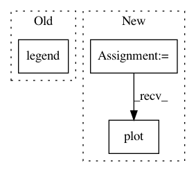

acb8ac5145cfd88fdbd2d381b34883b2c212c8c5,examples/miscellaneous/plot_isotonic_regression.py,,,#,14
Before Change
plt.plot(x, y_, "b.-", markersize=12)
plt.plot(x, lr.predict(x[:, np.newaxis]), "b-")
plt.gca().add_collection(lc)
plt.legend(("Data", "Isotonic Fit", "Linear Fit"), loc="lower right")
plt.title("Isotonic regression")
plt.show()
After Change
x_test = np.linspace(-10, 110, 1000)
ax1.plot(x_test, ir.predict(x_test), "C1-")
ax1.plot(ir.X_thresholds_, ir.y_thresholds_, "C1.", markersize=12)
ax1.set_title("Prediction function (%d thresholds)" % len(ir.X_thresholds_))
plt.show()
In pattern: SUPERPATTERN
Frequency: 4
Non-data size: 3
Instances
Project Name: scikit-learn/scikit-learn
Commit Name: acb8ac5145cfd88fdbd2d381b34883b2c212c8c5
Time: 2020-06-25
Author: drehbleistift@gmail.com
File Name: examples/miscellaneous/plot_isotonic_regression.py
Class Name:
Method Name:
Project Name: datascienceinc/Skater
Commit Name: e8b2e17f4eec658f6a6d53486dbbe3eac48bb0fa
Time: 2017-03-30
Author: aikramer2@gmail.com
File Name: pyinterpret/core/global_interpretation/partial_dependence.py
Class Name: PartialDependence
Method Name: _plot_2d_1_binary_feature_and_1_continuous
Project Name: datascienceinc/Skater
Commit Name: e8b2e17f4eec658f6a6d53486dbbe3eac48bb0fa
Time: 2017-03-30
Author: aikramer2@gmail.com
File Name: pyinterpret/core/global_interpretation/partial_dependence.py
Class Name: PartialDependence
Method Name: _plot_2d_2_binary_feature
Project Name: richzhang/colorization-pytorch
Commit Name: 1cc19c989ca609584119a1973845e72598d754d4
Time: 2018-09-03
Author: rzhang88@gmail.com
File Name: test_sweep.py
Class Name:
Method Name: